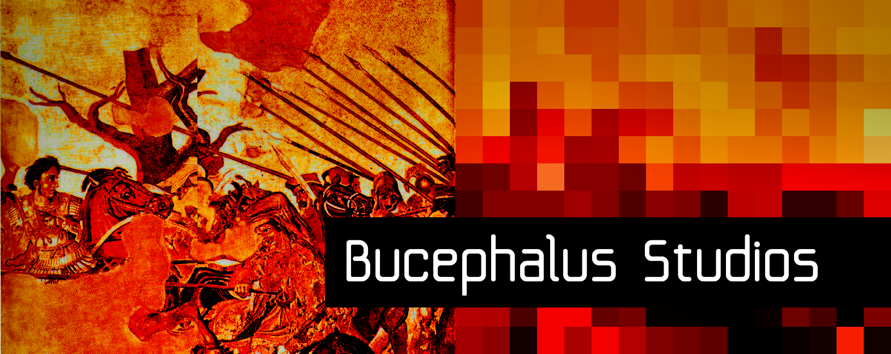
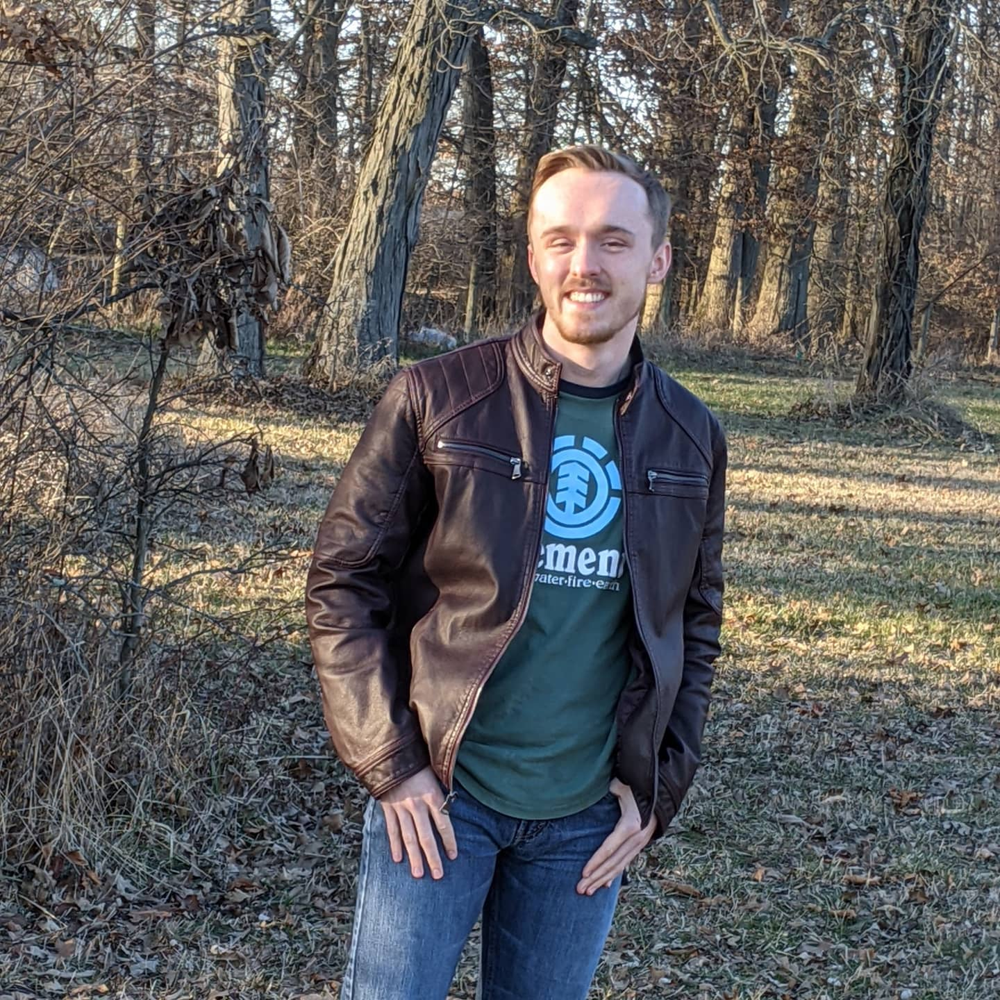
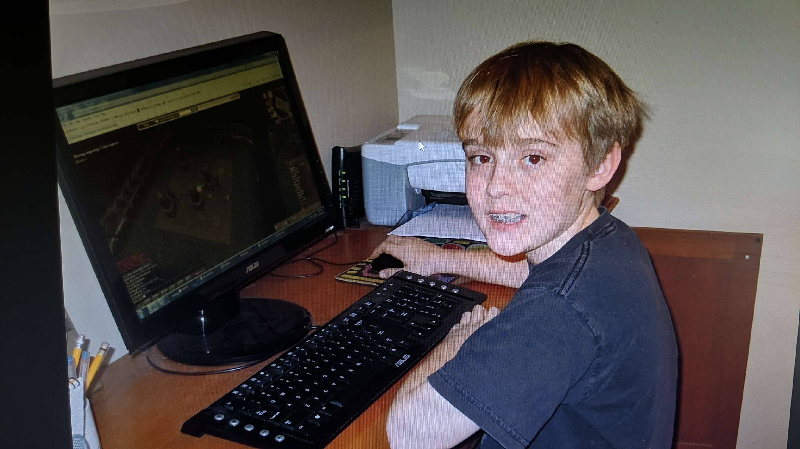

About Bucephalus Studios

Bucephalus Studios LLC is a software company founded in 2021 by Jeff Stevens. We are dedicated to creating original games
free from predatory monetization, low-quality content, and heavy-handed messaging. Games are about fun; let's keep them that way!
The team at Bucephalus Studios consists of a single full-time developer, Jeff Stevens, and a motley crew of
freelancers, friends, and family. We're not beholden to publishers or investors, so we're bound to make something
absurd and true to ourselves.
We are also an ardent supporter of free and open-source software. Lots of our code, tools, and libraries are available to download
and use for free on the "Software" tab of this website and on our Github.
About Jeff Stevens

For my professional profile and history, please see
my linkedin.
Hi, I'm Jeff Stevens, and this was me as a wee lad.

I'm in my 20s now, and these memories of meeting up with my lunchtable friends in MMORPGs, braving the wild-west
of early internet forums and image boards, and playing every flash game I could find on Newgrounds and Kongregate made me the game
developer I am today.
I work from home doing business as Bucephalus Studios designing games, writing code, and doing the
mish-mash of other tasks that comes with pulling a game into the world kicking and screaming. Outside of work
you'll find me reading fantasy novels, going to the gym, and cooking concerning amounts of spaghetti for my
family and friends.
Favorite stuff: